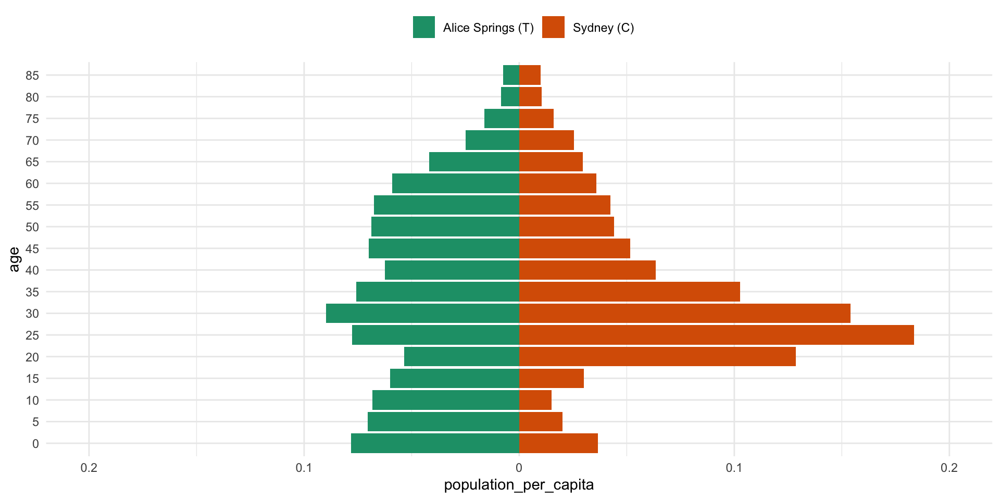

NZRSE conf
Extendable projection of social contact matrices
Nicholas Tierney
Telethon Kids Institute
The story so far
2008-2012: Undergraduate + honours in Psychology
2013 - 2017: PhD Statistics, QUT
- Exploratory Data Analysis (EDA)
- Bayesian / Geospatial statistics / Optimal placement
2018 - 2020: Research Fellow / Lecturer at Monash
- Design and improve tools for EDA
2020 - 2022: Research Software Engineer @ Telethon Kids Institute
- Maintain and design tools for data analysis
visdat::vis_dat(airquality)

naniar::gg_miss_upset(riskfactors)
brolgar - take spaghetti

brolgar - spread spaghetti
Infectious Disease Modelling
I was briefly part of a team advising Australian Government for COVID response in 2021
Diseases like COVID19 and Influenza spread through face to face social contact
Describe which 3 people had contact:
James has had contact with Luke
Nick hasn’t had contact with either
Example: visually
Example: matrix
James Luke Nick
James TRUE TRUE FALSE
Luke TRUE TRUE FALSE
Nick FALSE FALSE TRUELogical –> Numeric
People –> Age groups
What do you do with this?
Well, if we know how many times people have contact, then we can have an idea of which age groups will spread COVID
Simulate how many COVID cases would get transmitted
Explore how vaccination reduces transmission
Do this for different areas in Australia
Do we know how much contact people have?
We don’t. Well, not in Australia. Yet.
You need to conduct a surveys where people diary the amount and manner of daily contacts they have.
Mossong et al have this for 8 countries in Europe
Method of Mossong et al
- Random weekday: record every person in contact with.
- Physical contact:
- skin-to-skin contact (kiss or handshake)
- Non-physical contact:
- two-way conversation with 3+ words in physical presence of a person
Method of Mossong et al
- Participants provide info on:
- age and sex of each contact person
- location (home, work, school, leisure, transport, or other)
- time spent together
- frequency of usual contacts with this individual
Contact surveys are üí∞ üí∞ üí∞
- Part of why we don’t have them in Australia
- Can we get a contact matrix for a country not on the list?
- We need to have a best guess from existing surveys
Synthetic contact matrices
- Pre-existing statistical methodologies project empirical contact matrices to new countries.
- New projected contact matrices: “synthetic contact matrices”
- Use existing contact surveys (e.g., Mossong)
- Use setting-specific survey data on household, school, classroom, and workplace composition
- Combine with empirical data on contact patterns in Europe using statistical models
Prem et al
- Prem et al. have one of the most widely used approaches to synthetic contact matrices
- Extensively applied across infectious diseases applications
- Initially provided 155 matrices for 155 countries (177 later in 2020)
Brief explainer of Prem
There is a lot more to the method! Not enough time.
Core ideas:
- Build a model from the POLYMOD study, predicting number of contacts
- Incorporate key age information for different locations (home, work, school, other)
- Extrapolate the number of contacts to different countries, using age information from those countries
- Create a new contact matrix for a given country
Populations are different

Populations are different
What we want
- We want to be able use an age distribution population
# A tibble: 18 × 4
lga lower.age.limit year population
<chr> <dbl> <dbl> <dbl>
1 Fairfield (C) 0 2020 12261
2 Fairfield (C) 5 2020 13093
3 Fairfield (C) 10 2020 13602
4 Fairfield (C) 15 2020 14323
5 Fairfield (C) 20 2020 15932
6 Fairfield (C) 25 2020 16190
7 Fairfield (C) 30 2020 14134
8 Fairfield (C) 35 2020 13034
9 Fairfield (C) 40 2020 12217
10 Fairfield (C) 45 2020 13449
11 Fairfield (C) 50 2020 13419
12 Fairfield (C) 55 2020 13652
13 Fairfield (C) 60 2020 12907
14 Fairfield (C) 65 2020 10541
15 Fairfield (C) 70 2020 8227
16 Fairfield (C) 75 2020 5598
17 Fairfield (C) 80 2020 4006
18 Fairfield (C) 85 2020 4240What we want
- Input age distribution population and get out a contact matrix.
How do we extend this method?
Code is provided, but a few key issues:
It was code not written for reuse (code vs software)
No clear interface on how to get inputs for a given country or region.
Challenging to see which bits of code matched which methods
Building our own extension
Nick Golding wrote a new method that was able to be more flexible, using GAMs instead of Bayesian approach.
I was tasked with writing software from initial model fitting code, with guidance from Nick
Named the package,
conmat, (repo), creating a home for code for others to contribute to.In R package form, this made it easier for us to develop and extend software on demand for our needs
Demonstration of conmat
# A tibble: 18 × 4
lga lower.age.limit year population
<chr> <dbl> <dbl> <dbl>
1 Fairfield (C) 0 2020 12261
2 Fairfield (C) 5 2020 13093
3 Fairfield (C) 10 2020 13602
4 Fairfield (C) 15 2020 14323
5 Fairfield (C) 20 2020 15932
6 Fairfield (C) 25 2020 16190
7 Fairfield (C) 30 2020 14134
8 Fairfield (C) 35 2020 13034
9 Fairfield (C) 40 2020 12217
10 Fairfield (C) 45 2020 13449
11 Fairfield (C) 50 2020 13419
12 Fairfield (C) 55 2020 13652
13 Fairfield (C) 60 2020 12907
14 Fairfield (C) 65 2020 10541
15 Fairfield (C) 70 2020 8227
16 Fairfield (C) 75 2020 5598
17 Fairfield (C) 80 2020 4006
18 Fairfield (C) 85 2020 4240Extrapolate to a new population
$home
[0,5) [5,10) [10,15) [15,20) [20,25) [25,30)
[0,5) 0.55937722 0.38605578 0.17917034 0.11728346 0.17494283 0.37757782
[5,10) 0.45004867 0.74634125 0.45633287 0.17768035 0.11763396 0.20425143
[10,15) 0.27441817 0.48678530 0.83400880 0.44036841 0.16102946 0.11745813
[15,20) 0.22855433 0.22835607 0.44905886 0.76940487 0.38040014 0.14104260
[20,25) 0.33238719 0.17819852 0.18860264 0.37959322 0.70468036 0.35514830
[25,30) 0.56775631 0.26871520 0.14213635 0.14225059 0.33082841 0.67959783
[30,35) 0.66274730 0.47809697 0.22250688 0.10260798 0.11221744 0.30171394
[35,40) 0.44730888 0.57299240 0.41853198 0.16576020 0.07660462 0.09834327
[40,45) 0.22940356 0.38619579 0.52331490 0.33408950 0.12806613 0.06637604
[45,50) 0.15650537 0.19539202 0.35968238 0.44381733 0.27749613 0.11513026
[50,55) 0.16636819 0.12546892 0.16872119 0.29621590 0.36490096 0.24243058
[55,60) 0.18849101 0.12613868 0.09431281 0.12533086 0.22642390 0.29336326
[60,65) 0.15802431 0.13593426 0.08217401 0.05998173 0.08471409 0.15999501
[65,70) 0.09570148 0.10835705 0.07957739 0.04579578 0.03616018 0.05388495
[70,75) 0.05294941 0.06406294 0.06090246 0.04229044 0.02719440 0.02414816
[75,Inf) 0.05027334 0.06177428 0.06258821 0.05725974 0.05241443 0.04957133
[30,35) [35,40) [40,45) [45,50) [50,55) [55,60)
[0,5) 0.52917112 0.35928119 0.16939406 0.11519344 0.13626562 0.17966074
[5,10) 0.48329112 0.65571410 0.41431360 0.19359920 0.13964318 0.17105926
[10,15) 0.23677472 0.54327687 0.65979878 0.38734840 0.18766575 0.14156558
[15,20) 0.11969489 0.24277750 0.49308926 0.53180522 0.30843042 0.15756021
[20,25) 0.14170296 0.12618114 0.23349604 0.41373381 0.42158607 0.25650758
[25,30) 0.34032571 0.14130462 0.12607919 0.21020383 0.33972088 0.35195852
[30,35) 0.59870582 0.29219734 0.13057778 0.11693882 0.17967313 0.28378112
[35,40) 0.26869822 0.47143003 0.24209121 0.12209763 0.10846906 0.15915326
[40,45) 0.09510824 0.22856149 0.37957646 0.22772625 0.12424619 0.10744873
[45,50) 0.06897799 0.09490577 0.20492757 0.37893998 0.25668045 0.14088809
[50,55) 0.11465273 0.07258549 0.09102565 0.20497849 0.43964817 0.30555261
[55,60) 0.21618480 0.11053156 0.06773859 0.08440917 0.21854557 0.50930064
[60,65) 0.22453226 0.17614479 0.08929441 0.05439145 0.07522306 0.22078229
[65,70) 0.10788631 0.15884264 0.12268457 0.06109755 0.04006227 0.06426870
[70,75) 0.03740429 0.07617792 0.10953296 0.08157081 0.04217937 0.03192569
[75,Inf) 0.04806763 0.05451776 0.08469951 0.12256805 0.12477643 0.10136536
[60,65) [65,70) [70,75) [75,Inf)
[0,5) 0.17300920 0.12313121 0.09835800 0.1303466
[5,10) 0.20946349 0.17823707 0.12823699 0.1623448
[10,15) 0.16474834 0.18129131 0.15561482 0.1679962
[15,20) 0.11792451 0.12728375 0.14073654 0.1589760
[20,25) 0.13472693 0.09620881 0.10322754 0.1520150
[25,30) 0.22299066 0.11727108 0.08591414 0.1419087
[30,35) 0.29909854 0.19199785 0.10800225 0.1272426
[35,40) 0.24610389 0.25556251 0.17457113 0.1259902
[40,45) 0.14895519 0.21688555 0.23123415 0.1615744
[45,50) 0.11429749 0.14456195 0.20629207 0.2292049
[50,55) 0.15763916 0.11714872 0.14181890 0.2705644
[55,60) 0.33064807 0.15801247 0.11408222 0.2478890
[60,65) 0.49089454 0.29607266 0.14276766 0.1795526
[65,70) 0.19216238 0.39381011 0.23939574 0.1323827
[70,75) 0.05648987 0.15973163 0.30328341 0.1473635
[75,Inf) 0.08199238 0.09569276 0.19486913 0.4023698
$work
[0,5) [5,10) [10,15) [15,20) [20,25)
[0,5) 0.0094683883 0.0032734722 0.002816215 0.011884040 0.04908195
[5,10) 0.0045967037 0.0060609400 0.005933911 0.017288984 0.06254511
[10,15) 0.0019812806 0.0036442034 0.017193699 0.043289867 0.10052098
[15,20) 0.0015116296 0.0021818055 0.015204953 0.139122225 0.23635155
[20,25) 0.0019613629 0.0022899930 0.012302327 0.137345715 0.59402769
[25,30) 0.0027662748 0.0024147272 0.009761121 0.090968718 0.52559836
[30,35) 0.0034040485 0.0025475576 0.008310784 0.065447652 0.34975552
[35,40) 0.0035764314 0.0025109233 0.007379301 0.051192518 0.25155153
[40,45) 0.0036871730 0.0025128297 0.007036797 0.045837821 0.20914486
[45,50) 0.0040915085 0.0027227246 0.007306960 0.045923901 0.19896364
[50,55) 0.0043095498 0.0028109059 0.007162739 0.043173177 0.18013096
[55,60) 0.0036274422 0.0023972811 0.005795537 0.032911798 0.13219103
[60,65) 0.0021681315 0.0015802011 0.003795463 0.020101314 0.07483048
[65,70) 0.0009439189 0.0008293203 0.002205160 0.011364312 0.03747182
[70,75) 0.0003624376 0.0003764863 0.001254462 0.007157981 0.02251799
[75,Inf) 0.0003319858 0.0002569713 0.001046544 0.008773102 0.03605186
[25,30) [30,35) [35,40) [40,45) [45,50) [50,55)
[0,5) 0.08541531 0.08574137 0.08075343 0.07799741 0.07073843 0.05537374
[5,10) 0.10848344 0.11413945 0.11188038 0.11211256 0.10713263 0.09219048
[10,15) 0.14857096 0.16021581 0.16064896 0.16063819 0.15454987 0.13990863
[15,20) 0.23663570 0.23943721 0.24840671 0.24513567 0.22592498 0.20144928
[20,25) 0.50944238 0.41013017 0.42767962 0.42449595 0.37401441 0.31270634
[25,30) 0.90384900 0.65049771 0.62731445 0.62608717 0.54060631 0.43003526
[30,35) 0.72174430 0.76563365 0.71009033 0.70271454 0.59921273 0.46830980
[35,40) 0.50782207 0.60208714 0.67436300 0.68683499 0.58261471 0.44900894
[40,45) 0.40989766 0.48090633 0.56225822 0.65761289 0.58845796 0.44639398
[45,50) 0.37587745 0.44146986 0.50278802 0.58409870 0.62661604 0.50307875
[50,55) 0.32449770 0.37879774 0.43321902 0.47880584 0.50758442 0.51659659
[55,60) 0.22805693 0.25849245 0.30116161 0.33026505 0.32569678 0.33340526
[60,65) 0.12248341 0.13432304 0.15716717 0.17719763 0.16863239 0.15922927
[65,70) 0.05620608 0.05978026 0.07028509 0.08217683 0.07899226 0.06974852
[70,75) 0.03082137 0.03121590 0.03722263 0.04599962 0.04596189 0.03898958
[75,Inf) 0.05335541 0.05059575 0.05830441 0.08151596 0.09980679 0.09105309
[55,60) [60,65) [65,70) [70,75) [75,Inf)
[0,5) 0.03055127 0.01069179 0.003563600 0.002505352 0.003870799
[5,10) 0.05933059 0.02386746 0.007791835 0.004004593 0.003652821
[10,15) 0.10095239 0.04800492 0.017638952 0.008149083 0.004192452
[15,20) 0.15203986 0.08183562 0.035953414 0.018469849 0.006827851
[20,25) 0.22681893 0.12385324 0.059426914 0.036587025 0.013436401
[25,30) 0.28831062 0.14570531 0.069279246 0.048963671 0.021379300
[30,35) 0.30265656 0.13882810 0.059851566 0.042479168 0.022066690
[35,40) 0.29509387 0.13132425 0.049731355 0.030766282 0.016394444
[40,45) 0.29780623 0.13938490 0.050355057 0.026140792 0.011839894
[45,50) 0.33204169 0.16317160 0.061726550 0.028894226 0.010248698
[50,55) 0.35996337 0.17841733 0.071107803 0.032883356 0.009457324
[55,60) 0.30333468 0.15947907 0.064521417 0.030085638 0.007621199
[60,65) 0.14935678 0.10368239 0.045752391 0.021392984 0.004924129
[65,70) 0.06093550 0.04521728 0.027697711 0.014236741 0.003009743
[70,75) 0.03124344 0.02227795 0.014638277 0.010420579 0.002363574
[75,Inf) 0.06113815 0.03526483 0.022060067 0.016386764 0.005709931
$school
[0,5) [5,10) [10,15) [15,20) [20,25)
[0,5) 1.2358696998 0.247486320 0.032193829 0.020850528 0.0366915825
[5,10) 0.3179310607 4.498408402 0.342129199 0.032837759 0.0394399848
[10,15) 0.0755278792 0.412354577 6.602110276 0.440572952 0.0700414646
[15,20) 0.0572976718 0.080511140 0.558165344 5.414594331 0.3463262272
[20,25) 0.0765402818 0.102972389 0.166516239 0.503161773 0.8412040183
[25,30) 0.1034619161 0.130279917 0.126084138 0.150040873 0.2169940136
[30,35) 0.1162951590 0.173128814 0.165164646 0.114578965 0.0640173828
[35,40) 0.0988653023 0.175737694 0.199610818 0.140615391 0.0434605441
[40,45) 0.0726482006 0.147718028 0.187944765 0.166042420 0.0521564679
[45,50) 0.0540968969 0.124849158 0.160628204 0.157667068 0.0650820375
[50,55) 0.0390590271 0.101063040 0.130938665 0.118473281 0.0567291283
[55,60) 0.0231998151 0.063427822 0.086200976 0.069251563 0.0305800143
[60,65) 0.0099569993 0.026856808 0.037893943 0.029584381 0.0129131164
[65,70) 0.0031529497 0.008300227 0.011848754 0.009096099 0.0052756383
[70,75) 0.0009529908 0.002383149 0.003245067 0.002172102 0.0012399827
[75,Inf) 0.0015920412 0.002589751 0.002491511 0.001053170 0.0003551419
[25,30) [30,35) [35,40) [40,45) [45,50)
[0,5) 0.0646516722 0.0640423739 0.047315981 0.060371758 0.101896890
[5,10) 0.0710216181 0.1153472661 0.109600111 0.121213994 0.207901620
[10,15) 0.0552525717 0.1046319274 0.142556457 0.150273858 0.206484573
[15,20) 0.0718415846 0.0743912189 0.123642828 0.150202705 0.162172367
[20,25) 0.1486215645 0.0465312628 0.053981076 0.074231183 0.076299523
[25,30) 0.2961808482 0.0818562792 0.040460944 0.046800565 0.050215344
[30,35) 0.1066361894 0.1622009398 0.061649782 0.047742449 0.048127062
[35,40) 0.0314694997 0.0630760101 0.071094589 0.048578686 0.046367621
[40,45) 0.0203285215 0.0230012722 0.034078503 0.039934367 0.045420631
[45,50) 0.0252626911 0.0164908729 0.017485770 0.024043071 0.041321567
[50,55) 0.0298387752 0.0186131356 0.013190196 0.013794849 0.023680207
[55,60) 0.0203295413 0.0167506823 0.011430455 0.008564327 0.009996071
[60,65) 0.0096119492 0.0109345007 0.009726346 0.007078658 0.005452022
[65,70) 0.0046486152 0.0064222712 0.008317668 0.007534387 0.005131395
[70,75) 0.0010920323 0.0016911875 0.003033472 0.003759291 0.002741524
[75,Inf) 0.0002347126 0.0003985183 0.001108305 0.002566262 0.002936996
[50,55) [55,60) [60,65) [65,70) [70,75)
[0,5) 0.111540917 0.0689229326 0.0303233734 0.0100116875 0.0022718430
[5,10) 0.268349879 0.1528186883 0.0492270517 0.0168105904 0.0070864370
[10,15) 0.276743106 0.1719292437 0.0467756630 0.0126054097 0.0071180504
[15,20) 0.180090388 0.1225171357 0.0344122268 0.0067115699 0.0029223018
[20,25) 0.066381028 0.0443558711 0.0164280754 0.0039186747 0.0010282893
[25,30) 0.038707054 0.0239966116 0.0119549148 0.0038528858 0.0006233083
[30,35) 0.035452559 0.0210155654 0.0131419956 0.0059015177 0.0007926006
[35,40) 0.032048855 0.0172626997 0.0131270183 0.0098082738 0.0016822804
[40,45) 0.033636435 0.0153681201 0.0114284413 0.0142364478 0.0043316022
[45,50) 0.044416123 0.0195019024 0.0104557120 0.0162572310 0.0097638800
[50,55) 0.051143630 0.0333379479 0.0125009921 0.0140967349 0.0133427018
[55,60) 0.021116413 0.0402120602 0.0193401479 0.0113680788 0.0096515725
[60,65) 0.006670482 0.0138593883 0.0248064365 0.0111717648 0.0049073717
[65,70) 0.003674495 0.0044116127 0.0080533915 0.0094131841 0.0028034789
[70,75) 0.001519927 0.0011136884 0.0013891506 0.0019236740 0.0016463565
[75,Inf) 0.001533895 0.0006295928 0.0004720087 0.0005558011 0.0005999646
[75,Inf)
[0,5) 0.0002418317
[5,10) 0.0017264725
[10,15) 0.0053662254
[15,20) 0.0076887406
[20,25) 0.0064600058
[25,30) 0.0029941645
[30,35) 0.0007293494
[35,40) 0.0001878398
[40,45) 0.0002459017
[45,50) 0.0009214829
[50,55) 0.0029394245
[55,60) 0.0046223541
[60,65) 0.0033614790
[65,70) 0.0014681503
[70,75) 0.0005724311
[75,Inf) 0.0004628103
$other
[0,5) [5,10) [10,15) [15,20) [20,25) [25,30)
[0,5) 0.81478145 0.45256395 0.10917264 0.07894378 0.12307902 0.16430265
[5,10) 0.41931103 1.82170694 0.64279606 0.14369974 0.12559994 0.17320691
[10,15) 0.15456026 0.70094600 2.94289487 0.77429570 0.20212198 0.19275555
[15,20) 0.14466070 0.20363249 0.97503511 3.28269950 0.79289273 0.29139412
[20,25) 0.24961582 0.17730485 0.27027619 1.18360196 2.65007558 0.78197436
[25,30) 0.41873117 0.27419642 0.20502680 0.38098229 1.17396320 1.61008983
[30,35) 0.46883939 0.40232329 0.24325593 0.24579509 0.46123947 0.85475513
[35,40) 0.34794320 0.40489139 0.30385643 0.23854219 0.29109001 0.42489448
[40,45) 0.23220288 0.28696080 0.29001756 0.26229359 0.26163860 0.29686619
[45,50) 0.19255317 0.19112428 0.21122870 0.24643244 0.27369098 0.28367683
[50,55) 0.20140850 0.15035891 0.13726777 0.17746039 0.25023977 0.29465932
[55,60) 0.22462026 0.14589723 0.09918483 0.10855714 0.17585721 0.26386805
[60,65) 0.21180314 0.14335045 0.08667867 0.06948485 0.09749767 0.17018673
[65,70) 0.15034532 0.11690769 0.07757210 0.05286184 0.05150181 0.07920448
[70,75) 0.08370649 0.07438835 0.06007261 0.04410846 0.03429442 0.03781846
[75,Inf) 0.06042292 0.05775048 0.06074408 0.06618968 0.06050986 0.05455752
[30,35) [35,40) [40,45) [45,50) [50,55) [55,60)
[0,5) 0.17472242 0.15872293 0.1144962 0.08582814 0.08322425 0.08246880
[5,10) 0.20972186 0.22996422 0.1889557 0.12351565 0.09375080 0.09797056
[10,15) 0.22910965 0.26326858 0.2694367 0.20954175 0.13945239 0.11489136
[15,20) 0.27860098 0.28845443 0.3099640 0.31712781 0.25531656 0.17729369
[20,25) 0.44629916 0.39514898 0.3559339 0.40098547 0.44664444 0.35197931
[25,30) 0.77370274 0.58409393 0.4342284 0.39971265 0.53025088 0.56652203
[30,35) 0.93591372 0.72538589 0.5327966 0.37570996 0.42985935 0.57362723
[35,40) 0.58693853 0.66873042 0.5962530 0.40732499 0.34338549 0.43347243
[40,45) 0.35349900 0.46132728 0.5543347 0.48119970 0.35869798 0.35219448
[45,50) 0.28377089 0.31481319 0.4103487 0.51782967 0.46612993 0.40021291
[50,55) 0.28939396 0.25968271 0.2797822 0.40041194 0.53679210 0.53305087
[55,60) 0.31070509 0.26950049 0.2158998 0.25804370 0.43280103 0.59454555
[60,65) 0.26311901 0.27953644 0.1977481 0.16614160 0.25470577 0.45295014
[65,70) 0.14670597 0.21311292 0.1799328 0.12278189 0.13495249 0.23580024
[70,75) 0.06489085 0.11622944 0.1380154 0.10696603 0.09079191 0.11962904
[75,Inf) 0.06363760 0.09369326 0.1325008 0.15054708 0.15324037 0.16243975
[60,65) [65,70) [70,75) [75,Inf)
[0,5) 0.06765329 0.05644393 0.06925855 0.07257282
[5,10) 0.10434401 0.09114718 0.08051756 0.07631303
[10,15) 0.12640516 0.13213018 0.10524390 0.05971995
[15,20) 0.15335093 0.16876950 0.15600388 0.05931031
[20,25) 0.23890845 0.21023350 0.21956983 0.08662189
[25,30) 0.38792043 0.26404222 0.25797758 0.12422600
[30,35) 0.49244221 0.31550591 0.26187355 0.13881252
[35,40) 0.45962454 0.33766026 0.26329742 0.13444629
[40,45) 0.37395422 0.32047334 0.27502788 0.13890602
[45,50) 0.36110078 0.30731513 0.28869915 0.16681305
[50,55) 0.45070226 0.34145651 0.29952552 0.20156110
[55,60) 0.58763639 0.44385525 0.33430965 0.21850540
[60,65) 0.58360793 0.54767780 0.39987158 0.20850116
[65,70) 0.38002664 0.50718751 0.46538519 0.19239406
[70,75) 0.19124072 0.29183395 0.43765109 0.20005401
[75,Inf) 0.18816965 0.23910618 0.35112878 0.39091971
$all
[0,5) [5,10) [10,15) [15,20) [20,25) [25,30)
[0,5) 2.6194968 1.0893795 0.3233530 0.22896181 0.38379538 0.69194745
[5,10) 1.1918875 7.0725175 1.4471920 0.37150683 0.34521899 0.55696339
[10,15) 0.5064876 1.6037301 10.3962076 1.69852692 0.53371388 0.51403721
[15,20) 0.4320243 0.5146815 1.9974643 9.60582092 1.75597064 0.74091401
[20,25) 0.6605047 0.4607658 0.6376974 2.20370267 4.78998765 1.79518660
[25,30) 1.0927157 0.6756063 0.4830084 0.76424247 2.24738399 3.48971751
[30,35) 1.2512859 1.0560966 0.6392382 0.52842969 0.98722983 1.98484955
[35,40) 0.8976938 1.1561324 0.9293785 0.59611030 0.66270670 1.06252931
[40,45) 0.5379418 0.8233874 1.0083140 0.80826333 0.65100606 0.79346840
[45,50) 0.4072469 0.5140882 0.7388462 0.89384074 0.81523279 0.79994723
[50,55) 0.4111453 0.3797018 0.4440904 0.63532275 0.85200082 0.89142637
[55,60) 0.4399385 0.3378610 0.2854941 0.33605136 0.56505215 0.80561779
[60,65) 0.3819526 0.3077217 0.2105421 0.17915228 0.26995535 0.46227710
[65,70) 0.2501437 0.2343943 0.1712034 0.11911803 0.13040945 0.19394412
[70,75) 0.1379713 0.1412109 0.1254746 0.09572899 0.08524679 0.09388003
[75,Inf) 0.1126203 0.1223715 0.1268703 0.13327569 0.14933130 0.15771897
[30,35) [35,40) [40,45) [45,50) [50,55) [55,60) [60,65)
[0,5) 0.8536773 0.6460735 0.4222595 0.3736569 0.3864045 0.3616037 0.2816777
[5,10) 0.9224997 1.1071588 0.8365958 0.6321491 0.5939343 0.4811791 0.3869020
[10,15) 0.7307321 1.1097509 1.2401475 0.9579246 0.7437699 0.5293386 0.3859341
[15,20) 0.7121243 0.9032815 1.1983916 1.2370304 0.9452866 0.6094109 0.3875233
[20,25) 1.0446636 1.0029908 1.0881571 1.2650332 1.2473179 0.8796617 0.5139167
[25,30) 1.8463824 1.3931739 1.2331953 1.2007381 1.3387141 1.2307878 0.7685713
[30,35) 2.4624541 1.7893233 1.4138314 1.1399886 1.1132949 1.1810805 0.9435108
[35,40) 1.5207999 1.8856180 1.5737579 1.1584049 0.9329123 0.9049823 0.8501797
[40,45) 0.9525148 1.2862255 1.6314584 1.3428045 0.9629746 0.7728176 0.6737228
[45,50) 0.8107096 0.9299928 1.2234180 1.5647073 1.2703053 0.8926446 0.6490256
[50,55) 0.8014576 0.7786774 0.8634086 1.1366551 1.5441805 1.2319048 0.7992597
[55,60) 0.8021330 0.6926241 0.6224678 0.6781457 1.0058683 1.4473929 1.0971037
[60,65) 0.6329088 0.6225748 0.4713188 0.3946175 0.4958286 0.8369486 1.2029913
[65,70) 0.3207948 0.4505583 0.3923286 0.2680031 0.2484378 0.3654160 0.6254597
[70,75) 0.1352022 0.2326635 0.2973072 0.2372403 0.1734808 0.1839119 0.2713977
[75,Inf) 0.1626995 0.2076237 0.3012825 0.3758589 0.3706038 0.3255729 0.3058989
[65,70) [70,75) [75,Inf)
[0,5) 0.1931504 0.1723937 0.2070321
[5,10) 0.2939867 0.2198456 0.2440371
[10,15) 0.3436658 0.2761259 0.2372748
[15,20) 0.3387182 0.3181326 0.2328029
[20,25) 0.3697879 0.3604127 0.2585333
[25,30) 0.4544454 0.3934787 0.2905082
[30,35) 0.5732568 0.4131476 0.2888511
[35,40) 0.6527624 0.4703171 0.2770188
[40,45) 0.6019504 0.5367344 0.3125663
[45,50) 0.5298609 0.5336493 0.4071881
[50,55) 0.5438098 0.4875705 0.4845223
[55,60) 0.6777572 0.4881291 0.4786380
[60,65) 0.9006746 0.5689396 0.3963394
[65,70) 0.9381085 0.7218211 0.3292546
[70,75) 0.4681275 0.7530014 0.3503535
[75,Inf) 0.3574148 0.5629846 0.7994623plot new contact matrix
plot POLYMOD
Challenges in Design
- Model fitting is fixed and rigid
- Although there are arguments for
age_break
- Although there are arguments for
- Design decision to provide access to fitting the model
- Fixed and rigid means you cannot change the
Challenges in Design
- Hard coding variables
- age and population columns are currently required to be named
lower.age.limitandpopulation - At least 2 potential ways to resolve this
- age and population columns are currently required to be named
# A tibble: 18 × 4
lga lower.age.limit year population
<chr> <dbl> <dbl> <dbl>
1 Fairfield (C) 0 2020 12261
2 Fairfield (C) 5 2020 13093
3 Fairfield (C) 10 2020 13602
4 Fairfield (C) 15 2020 14323
5 Fairfield (C) 20 2020 15932
6 Fairfield (C) 25 2020 16190
7 Fairfield (C) 30 2020 14134
8 Fairfield (C) 35 2020 13034
9 Fairfield (C) 40 2020 12217
10 Fairfield (C) 45 2020 13449
11 Fairfield (C) 50 2020 13419
12 Fairfield (C) 55 2020 13652
13 Fairfield (C) 60 2020 12907
14 Fairfield (C) 65 2020 10541
15 Fairfield (C) 70 2020 8227
16 Fairfield (C) 75 2020 5598
17 Fairfield (C) 80 2020 4006
18 Fairfield (C) 85 2020 4240Challenges in Design
- Provide arguments for specifying the age and population information (
age_colandpopulation_col)
Challenges in Design
- Some kind of class based approach, where we encode or validate the
ageandpopulationcolumns.
Challenges in Design
- Rigid model design means easy to use, at cost of flexibility
- Specified variable names is fragile, but saves typing
- Extra functions could always be added to be more flexible variants
Future Directions
- Interface to changing GAM model terms or specify model
- Better automatic plotting
- Validating against Prem and other methods
- Allowing more flexible uses of other data sources
Thanks
- Nick Golding
- Aarathy Babu
- Michael Lydeamore
Learning more
njtierney.github.io/talk-nzrse-2022
nj_tierney
njtierney
nicholas.tierney@gmail.com